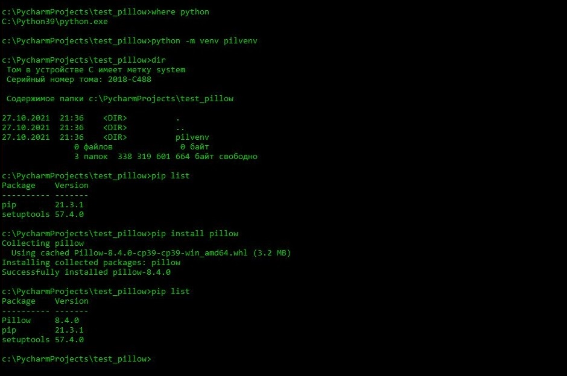
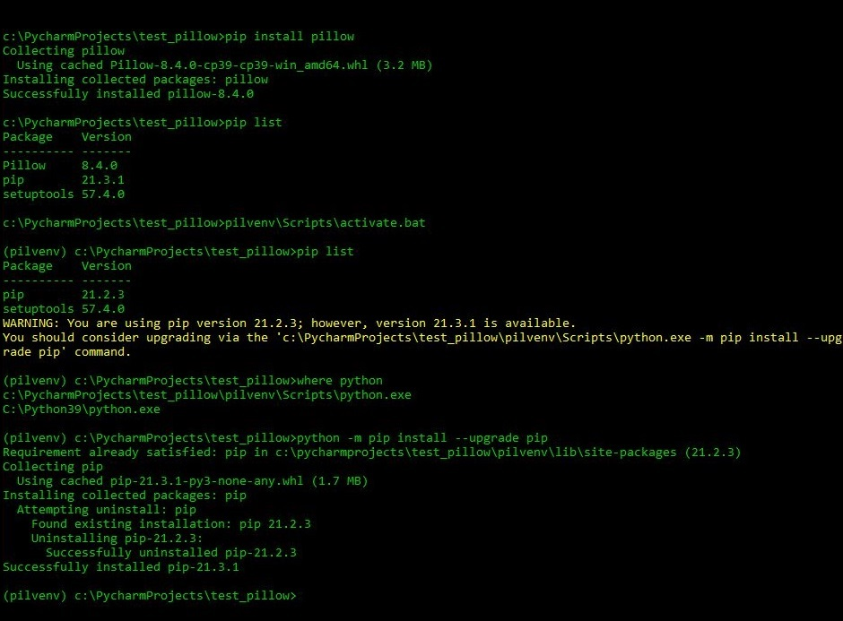
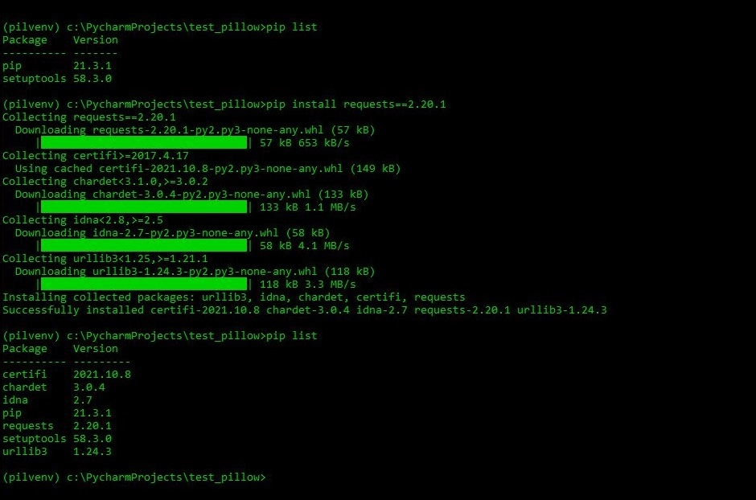
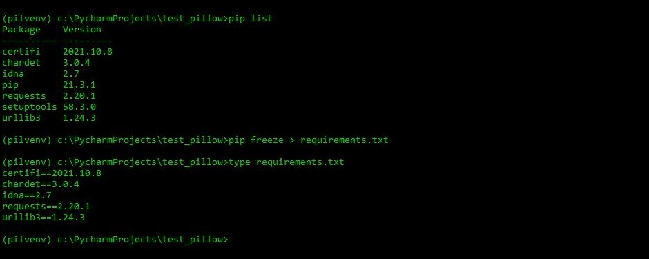
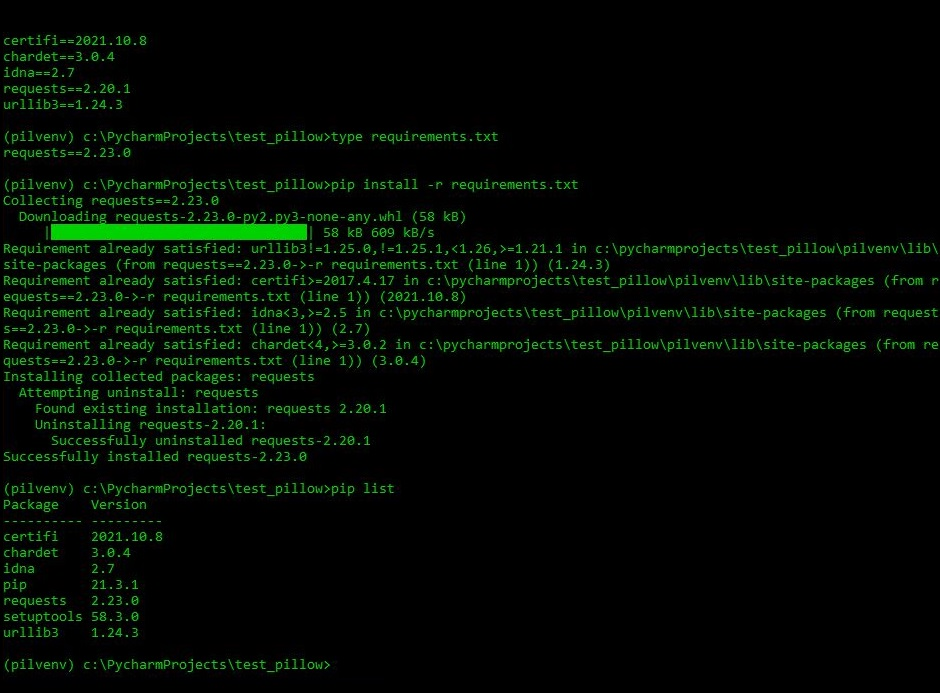
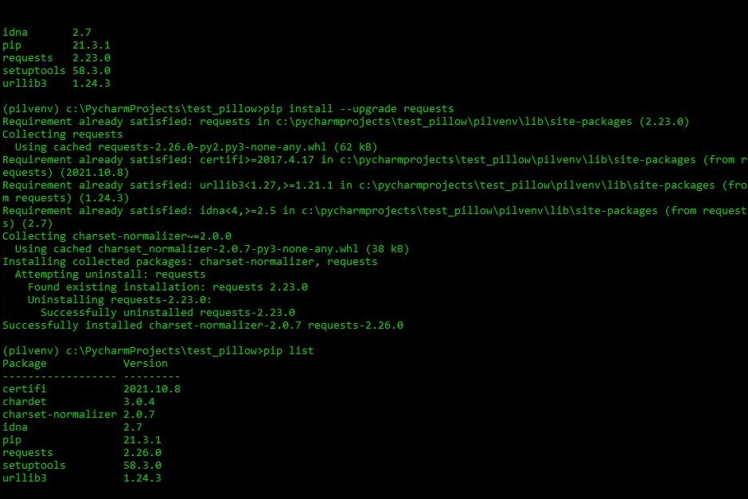
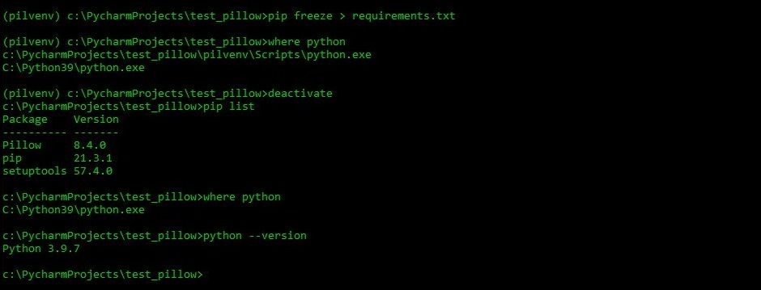
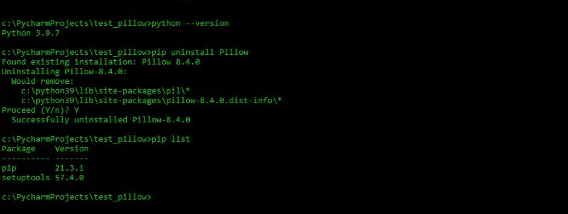

Практическое задание 1.
- Проверить, установлен ли пакет pillow в глобальном окружении. Если да — зафиксировать версию. Установить самую свежую версию pillow, если ранее она не была установлена. Сделать подтверждающий скриншот. Создать и активировать виртуальное окружение. Убедиться, что в нем нет пакета pillow. Сделать подтверждающий скриншот. Установить в виртуальное окружение pillow версии 7.1.1 (или другой, отличной от самой свежей). Сделать подтверждающий скриншот. Деактивировать виртуальное окружение. Сделать подтверждающий скриншот. Скрины нумеровать двухразрядными числами, например: «01.jpg», «02.jpg». Если будут проблемы с pillow - можно поработать с другим пакетом: например, requests.
1. Создаю (md) директорию/папку test_pillow в папке C:\PycharmProjects.
2. Перехожу (cd) в папку test_pillow.
3. Просмотр (dir) содержимого папки test_pillow.
4. pip list - просмотр установленных глобально пакетов.
5. where python - где интерпретатор Python

6. python -m venv pilvenv - создание виртуального окружения "pilvenv".
7. pip install pillow - устанока пакета pillow в глобальном окружении (виртуальное окружение "pilvenv" еще не активно).
8. pip list - просмотр установленных глобально пакетов. В глобальном окружении установлен пакет pillow 8.4.0.
9. Скриптом activate.bat (находящийся в папке pilvenv\Scrripts\) активирую виртуальное окружение "pilvenv".
(pilvenv) перед C:\PycharmProjects\test_pillow> показывает, что "pilvenv" - активное виртуальное окружение.
10. pip list - просмотр пакетов, установленных в виртуальном окружении "pilvenv".
- Появилось сообщение о доступной для обновления версии пакета pip.
11. where python - в папке pilvenv\Scrripts\ интерпретатор Python для текущего виртуального окружения.
12. python -m pip install --upgrade pip - обновление пакета pip до последней версии.
Установить в виртуальном окружении "pilvenv" пакеты ранних версий Pillow не удалось - выходили ошибки.
13. pip install requests==2.20.1 - установка пакета requests версии 2.20.1 в виртуальном окружении.
14. pip list - в списке установленных пакетов в текущем виртуальном окружении появились новые пакеты: requests и пакеты установленные с ним.
15. pip freeze > requirements.txt - запись в файл requirements.txt пакетов, установленных в текущем виртуальном окружении.
16. type requirements.txt - просмотр содержимого файла requirements.txt.
после редактирования requirements.txt:
17. type requirements.txt - в файле прописан requests==2.23.0
18. pip install -r requirements.txt - установка в текущем виртуальном окружении пакетов, прописанных в файле requirements.txt.
19. pip list - теперь в нашем виртуальном окружении пакет requests 2.23.0 и необходимые ему сопутствующие пакеты.
20. pip install --upgrade requests - обновление пакета requests до последней версии.
21. pip list - в списке пакетов теперь requests версии 2.26.0.
22. pip freeze > requirements.txt - записываю список пакетов текущего виртуального окружения в файл requirements.txt.
23. deactivate - деактивация виртуального окружения.
24. pip uninstall Pillow - удаление пакета Pillow из глобального окружения.
